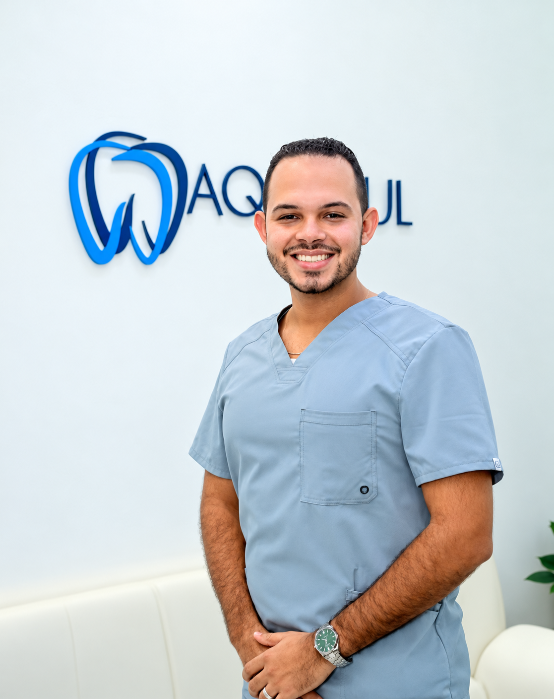
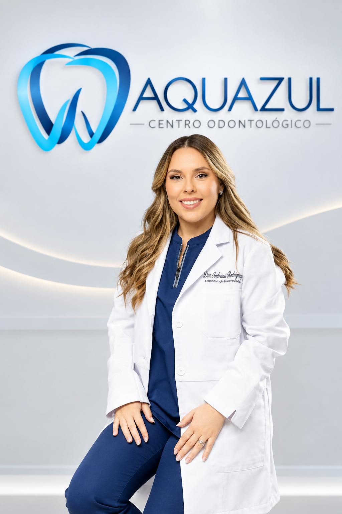
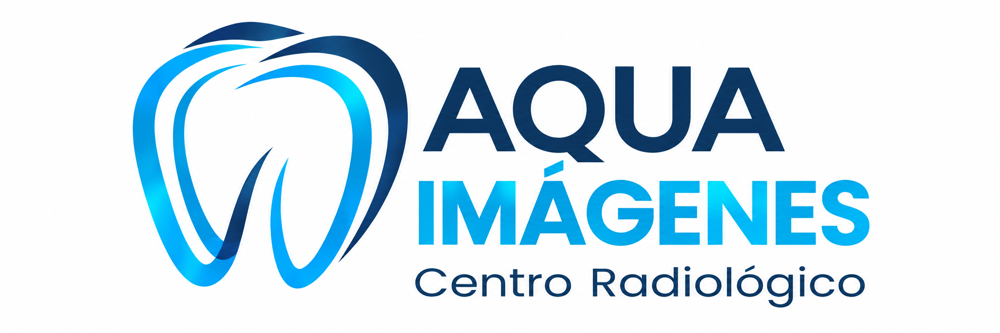
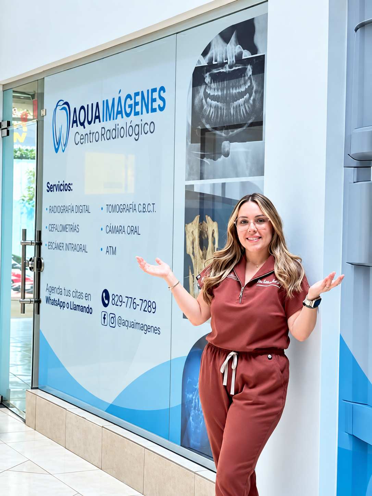

01
Ortodoncia
Una sonrisa en armonía.Evaluación y seguimiento para encontrar la opción de ortodoncia adecuada para ti.
CENTRO ODONTOLÓGICO · LA ROMANA
Cuidamos de ti con atención cercana y odontología pensada para cada etapa de tu vida.
BIENVENIDO A AQUAZUL
Sabemos que detrás de cada sonrisa hay una persona, una historia y muchas razones para sentirse bien.
Por eso, empezamos escuchándote. Te explicamos tus opciones con claridad y construimos contigo un plan de cuidado que responda a lo que necesitas.
Conoce a nuestro equipoEL CUIDADO QUE NECESITAS
Desde tu cuidado de rutina hasta una nueva etapa para tu sonrisa. Estamos aquí para acompañarte.
Evaluación y seguimiento para encontrar la opción de ortodoncia adecuada para ti.
Diseño de sonrisa y blanqueamiento, con un plan que parte de tu salud bucal.
Alternativas de rehabilitación para recuperar la función y la estética dental.
Limpieza dental y orientación para acompañarte en tus hábitos de cuidado.
Cada tratamiento comienza con una evaluación profesional y un plan individual.
SIN PRISA. CON CONFIANZA.
Escríbenos por WhatsApp. Cuéntanos qué servicio te interesa y coordinamos tu visita.
El equipo conoce tus necesidades y realiza una evaluación de tu salud bucal.
Te explicamos las opciones y resolvemos tus dudas antes de dar el siguiente paso.
Escenas ilustrativas creadas con IA a partir de fotografías facilitadas de los doctores; no documentan consultas reales.
CONOCE A NUESTROS PROPIETARIOS
Conoce a los profesionales al frente de Aquazul y su enfoque en el cuidado de tu salud oral.

REHABILITACIÓN BUCAL E IMPLANTES
Odontólogo y propietario de Aquazul. Su práctica se enfoca en rehabilitación bucal e implantes dentales.
Conoce su perfil
ORTODONCIA Y ORTOPEDIA MAXILAR
Ortodoncista y copropietaria de Aquazul. Te acompaña en el cuidado de la alineación de tu sonrisa.
Conoce su perfil
TECNOLOGÍA AL SERVICIO DE TU SONRISA

En nuestras renovadas instalaciones encontrarás la tecnología de última generación que tu odontólogo necesita para un diagnóstico preciso en un solo lugar.
¡Tu salud bucal merece la mayor comodidad y precisión!
EXPLORA NUESTROS ESTUDIOS
Una perspectiva tridimensional para complementar la evaluación de tu odontólogo.
Consulta la disponibilidad del estudio indicado en tu orden y los requisitos antes de tu visita.
Imágenes ilustrativas generadas con IA. No representan las instalaciones ni los equipos específicos de Aqua Imágenes.
LA CONFIANZA SE CONSTRUYE CONTIGO
GOOGLE · EXTRACTO DE RESEÑA
«te hacen sentir seguridad y confianza»Ver perfil del autor en Google ↗
GOOGLE · EXTRACTO DE RESEÑA
«Profesionales muy capacitados y con un trato muy humano.»Ver perfil del autor en Google ↗
GOOGLE · EXTRACTO DE RESEÑA
«recomendado al 100% si quieres estar seguro»Ver perfil del autor en Google ↗
Voces reales. Experiencias personales.
Selección de extractos de reseñas públicas de Google. Calificación, cantidad y opiniones consultadas el 3 de octubre de 2026; pueden cambiar. Leer todas las opiniones.
UNA CONVERSACIÓN, UN PRIMER PASO
Así podría acompañarte un agente de IA al consultar por una valoración de ortodoncia y un presupuesto.
Simulación ilustrativa. Luis es un paciente ficticio. Esta conversación no es un chat en vivo, no emite diagnósticos ni confirma citas o precios.
Agente IA · conversación de ejemplo
La cita y el presupuesto se coordinan con el equipo.
Puedes escribirnos por WhatsApp o llamarnos al +1 809-770-7289. Nuestro equipo confirmará contigo el día y la hora disponibles.
Nos encuentras en la Calle Dr. Gonzalvo #33, Downtown Plaza, Suite 103, La Romana, República Dominicana.
Al coordinar tu cita, consulta con el equipo qué documentos o estudios previos debes llevar según el motivo de tu visita.
Sí. Escríbenos para conocer las opciones de pago y la información de tu evaluación. El presupuesto de un tratamiento depende del plan indicado para ti.
Sí, puedes consultar disponibilidad por el mismo número de contacto. Aqua Imágenes es un centro radiológico independiente, ubicado junto a Aquazul.
ESTAMOS CERCA DE TI
VISÍTANOS
Calle Dr. Gonzalvo #33HORARIO
Lunes a viernes · 8:30 a. m. – 6:00 p. m.
Sábados · 9:00 a. m. – 2:00 p. m.
Domingos · cerrado
PLANIFICA TU VISITA
Consulta con nuestro equipo
los horarios disponibles
y coordina tu próxima cita.